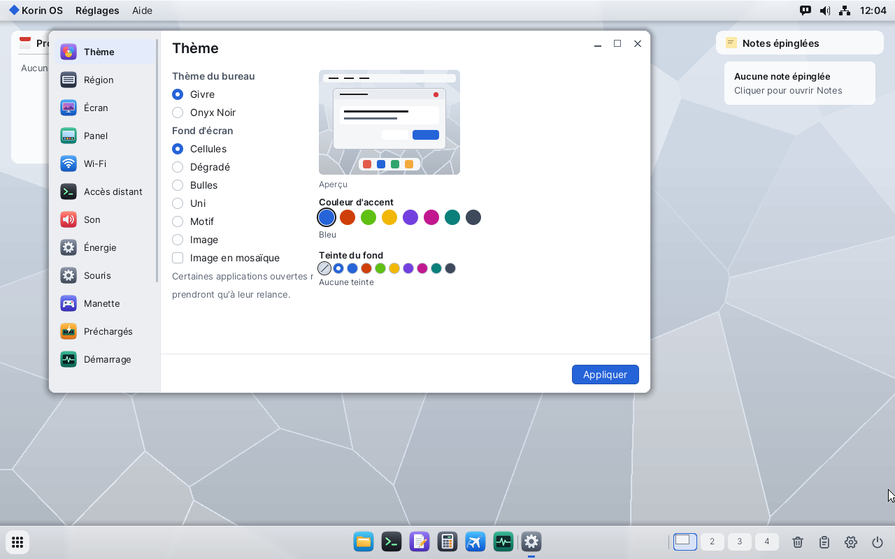
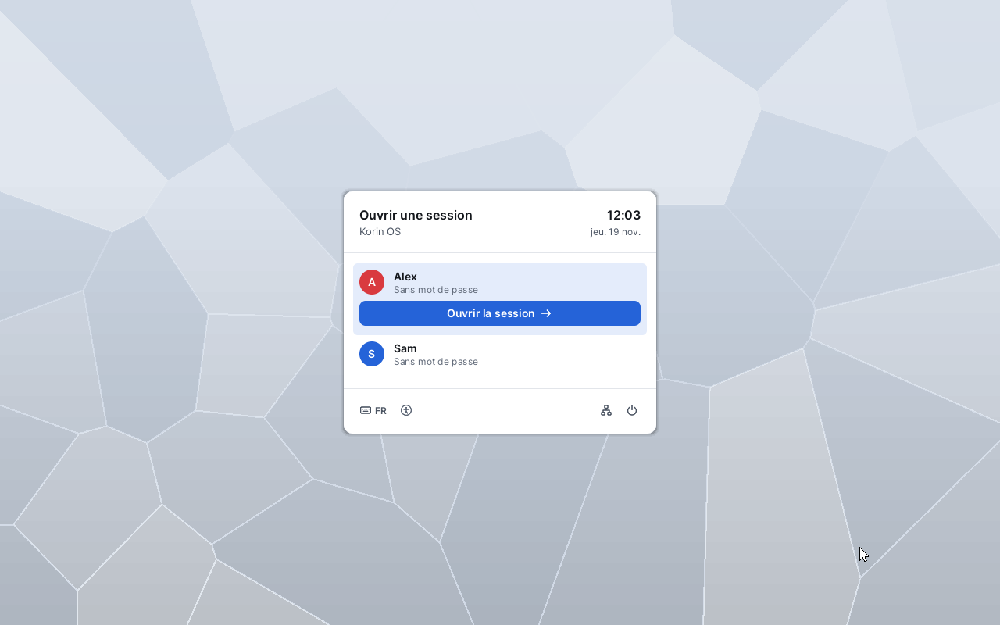
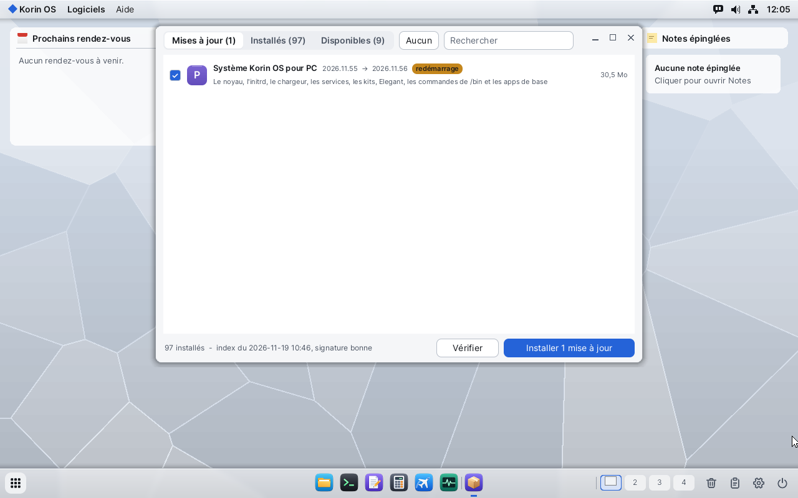
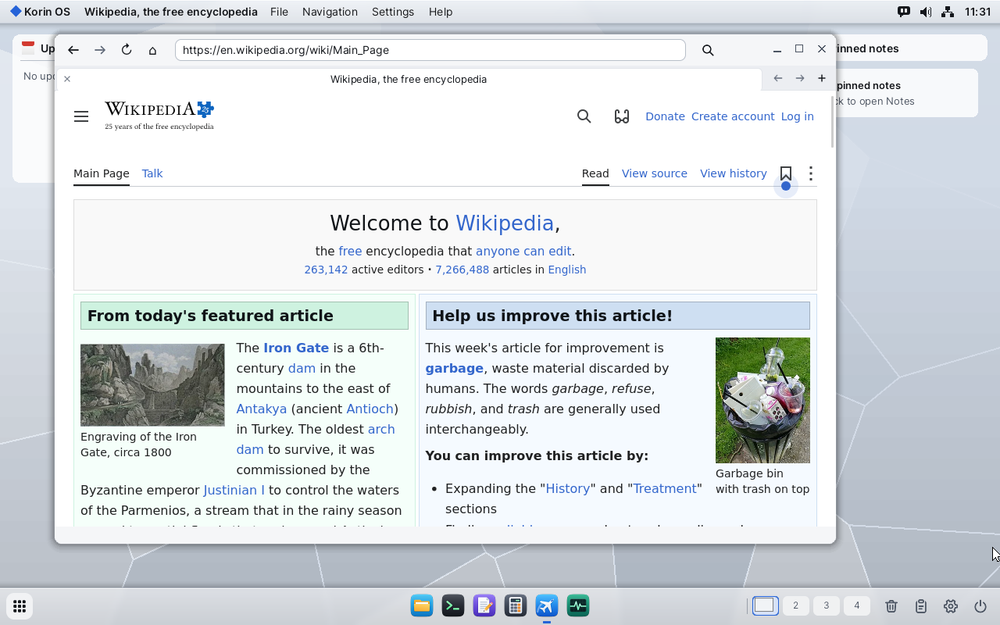
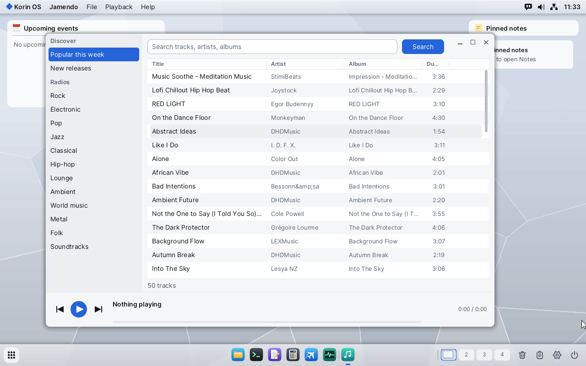
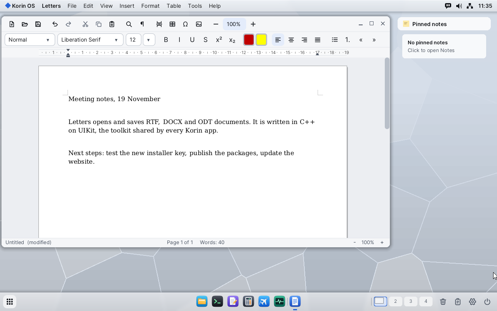
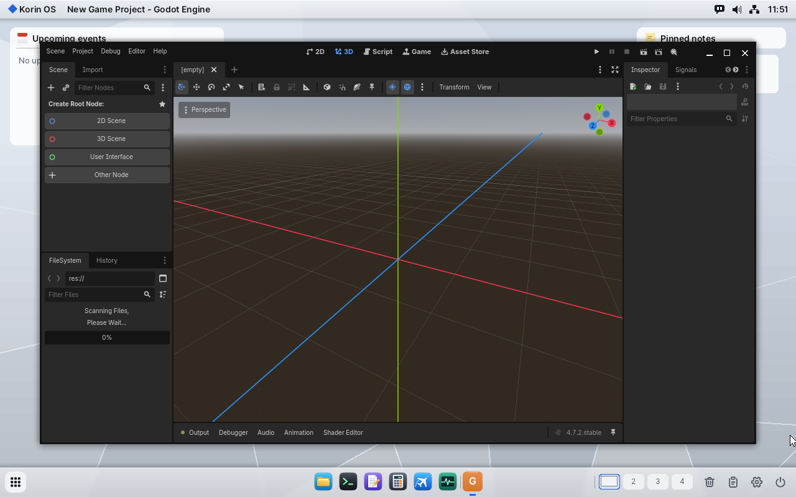
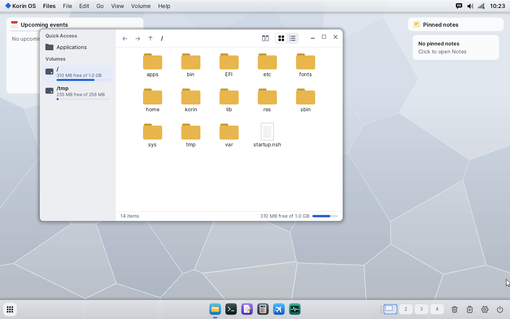

Fonctionnalités
Le bureau, les comptes, la gestion des logiciels et les apps livrées avec Korin OS. Toutes les captures de cette page ont été prises sous QEMU, sur une version PC du 19 novembre 2026, sans GPU.
Elegant, le bureau
Elegant est le serveur de fenêtres et le bureau de Korin. Il compose toutes les fenêtres, dessine en haut la barre de menus de l'app active et en bas une barre des tâches.
- Lanceur avec catégories et recherche
- Quatre espaces de travail, fenêtres réduites dans la barre
- Widgets du bureau : prochains événements, notes épinglées
- Deux thèmes, Givre (clair) et Onyx Noir (sombre), huit couleurs d'accent, plusieurs fonds d'écran
- Un « mode poche » en plein écran pour les petits écrans
- Une aide intégrée, avec un guide pour chaque app

Comptes et connexion
Chacun a son compte et son dossier personnel. Avec un seul compte sans mot de passe, Korin ouvre la session tout seul, comme avant.
- Écran de connexion avec la liste des comptes et leur image
- Mots de passe gardés en hachage PBKDF2-SHA-256 salé, lisible par le système seulement
sudo, et une carte de confirmation quand une app demande les droits d'administration, retenue cinq minutesuseradd,userdel,usermodet une page Utilisateurs dans les Réglages- Fermer la session depuis le menu d'extinction
Les règles d'accès par chemin sont encore en mode « journal » : les refus sont notés, pas encore appliqués. Le verrouillage et le changement rapide d'utilisateur sont prévus.

Logiciels, en paquets signés
Apps, kits, polices et le système lui-même sont des paquets. L'app Logiciels les range par catégorie, les installe, les retire et applique les mises à jour.
- Chaque index de dépôt est signé (ECDSA P-256) ; Korin refuse un index dont la signature est fausse
pkgen ligne de commande,pkgden service du système- Un dépôt pour le PC (113 paquets) et un pour le Raspberry Pi, tous deux sur GitHub Pages

Fichiers en réseau
Les partages réseau et Google Drive apparaissent dans l'arbre de fichiers, sous
/net, comme un autre volume. Tous les programmes y ont accès, de cp dans le
Terminal à Fichiers ou Letters. Sur le PC, les mots de passe des partages vont dans le coffre du système ; pour Drive, Korin
ne garde qu'un jeton de connexion chiffré.
Partages Windows (SMB)
Dans Fichiers, Volume › Se
connecter à un serveur… (Ctrl+K) prend \\hôte\partage ou smb://hôte/partage et un
nom d'utilisateur. Le partage est monté dans /net et revient à chaque démarrage. SMB 2 et 3,
avec signature et chiffrement de SMB3.
QEMU
Partager ses dossiers
smbd partage des
dossiers vers Windows, macOS et Linux (\\korin\Korin). Réglages › Partage de fichiers le
démarre, liste les dossiers partagés, en lecture seule ou non, et le compte que Windows demande.
QEMU utilisé depuis l'Explorateur de Windows 11
Google Drive
Dans Fichiers, Volume › Se connecter à
Google Drive… : on se connecte une fois à Google dans Jet, et le Drive est monté dans /net.
Les fichiers se lisent en flux avec lecture anticipée, sont renvoyés à Drive à la fermeture, et ce qu'on
efface va dans la corbeille de Drive. Les Google Docs, Sheets et Slides sont cachés pour l'instant.
matériel ZBook, avec le vrai Google Drive
Les apps
La plupart des apps sont écrites pour Korin sur UIKit et suivent le thème du bureau. D'autres sont des ports, comme WebKit, Godot ou MuPDF. Quelques apps n'existent que sur une sorte de machine : c'est indiqué.
Internet
- Jet : navigateur web sur WebKit, avec WebGL
- Mail, IRC, Telegram
- Courier : client HTTP pour essayer des API
- WebStudio : éditeur de sites avec aperçu en direct (PC)
- Serveur web (
webd), connexion Google (OAuth)
Bureautique
- Letters : traitement de texte, RTF, DOCX, ODT
- Sheet (XLSX, ODS), Slides (PPTX, ODP)
- Lecteur PDF, Notes, Calendrier, Cardfile
- Budget mensuel : budget et soldes
- Impression en PDF ou vers une imprimante IPP
Musique et vidéo
- Jamendo : musique libre Creative Commons, radios par genre (PC)
- Spotify : comptes Premium, par librespot (PC, nouveau)
- Media Player : bibliothèque musicale, WebM, MKV et MP4 (VP8, VP9, AV1)
- Studio de composition Koton, FM Tracker, Arabesque
- Magnéto (WAV, MP3, Opus), Mixer, Piano
Graphisme et CAO
- Forge : CAO paramétrique sur Open CASCADE (PC)
- Dessin, Photos, Visionneuse d'images (PNG, JPEG, GIF, WebP…)
- Éditeur d'icônes, Fractales
Jeux et émulateurs
- Game Library et ses émulateurs NES, Game Boy, SNES, GBA, N64, DS et GameCube
- Solitaire, FreeCell, Tetris, 2048, Arkanoid, Invaders, Pinball, Snake…
- Cosmo Zoom! ; Asteroids et Parking Jam, faits avec Godot (PC)
Assistants
- PocketQI : des questions sur le système, avec réponse à voix haute
- Vibe, l'agent de code de Mistral, dans Korin
- Claude, l'agent de code d'Anthropic, avec votre clé d'API
Système
- Fichiers, Terminal (bash), Éditeur
- Réglages, Logiciels, Disques, Gestionnaire des tâches
- Archiveur (ZIP, tar, gzip), Capture d'écran, Météo, Horloge
Apprendre et bricoler
- QBasic et QBStudio
- Turtle Quest : apprendre le BASIC en 48 niveaux
- GPIO Lab : piloter les broches du Pi en BASIC (Pi ou simulateur)
- Circuits : un jeu de portes logiques
Développement
- Studio : EDI C# en Avalonia, avec éditeur d'interface
- Éditeur de Godot 4.7 (PC)
- GCC, FASM, FreeBASIC, .NET, Python, git
- Plus sur la page Développement
Écrans
Captures sous QEMU (x86-64, quatre cœurs, sans GPU), le réseau par le mode utilisateur de QEMU. L'interface de ces captures est en anglais ; celles du haut de la page sont en français.





